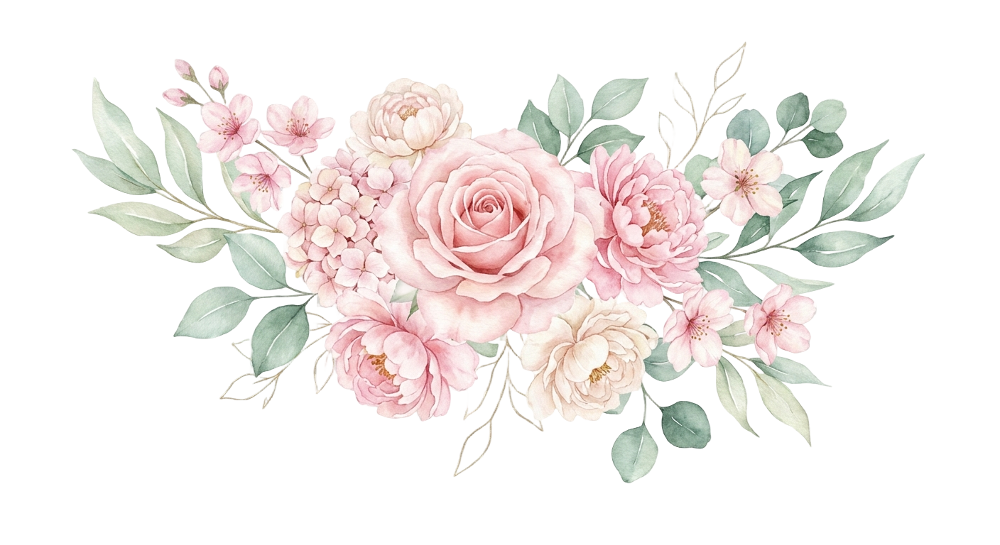
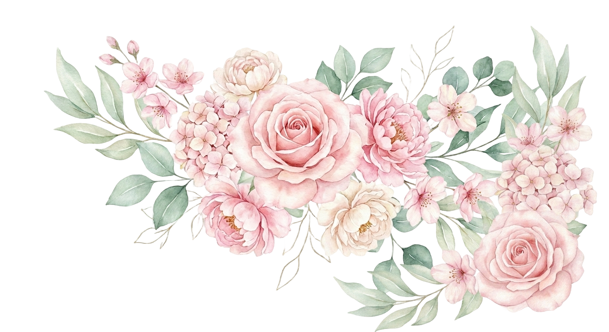
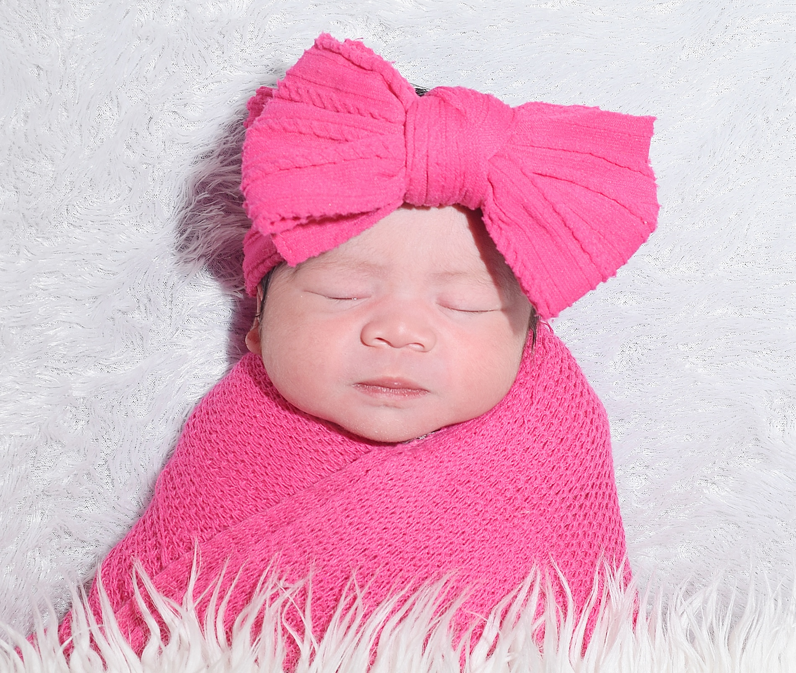
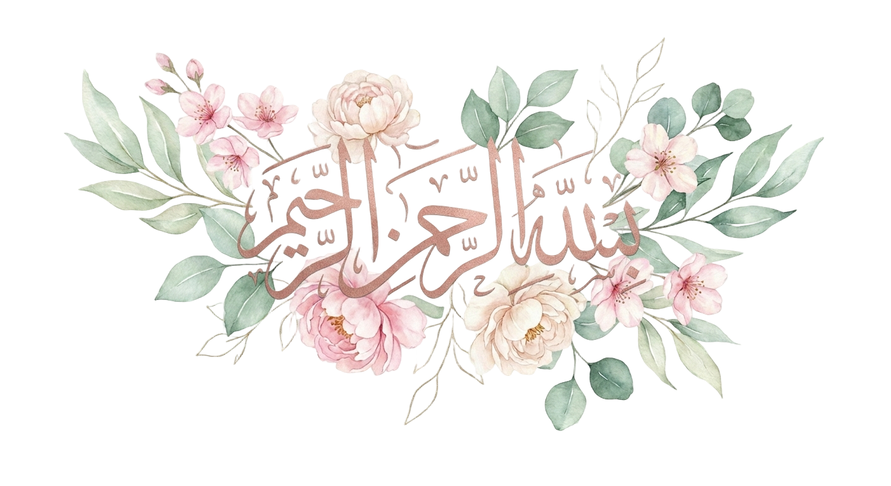

"Tiada kata yang lebih indah selain ungkapan rasa syukur atas kehadiran putri kami tercinta ke dunia ini."

Kepada Yth.
Bapak/Ibu/Saudara/i:
Tiada kata yang lebih indah selain ungkapan rasa syukur ke hadirat Allah SWT. Dengan memohon rahmat-Nya, kami bermaksud mengundang Bapak/Ibu untuk hadir pada acara Tasyakuran & Aqiqah putri kami:
Lahir: Bandar Lampung, 12 Maret 2026
Putri Tercinta dari:
Bapak Ronaldo & Ibu Annisa Marchantia Pratiwi
Minggu, 19 April 2026
Pukul 09.00 WIB - Selesai
Jl. Durian 1 No. 16, Kel Way Dadi Baru, Kec Sukarame, Kota B.Lampung
Kediaman Keluarga Besar Bapak Ronaldo